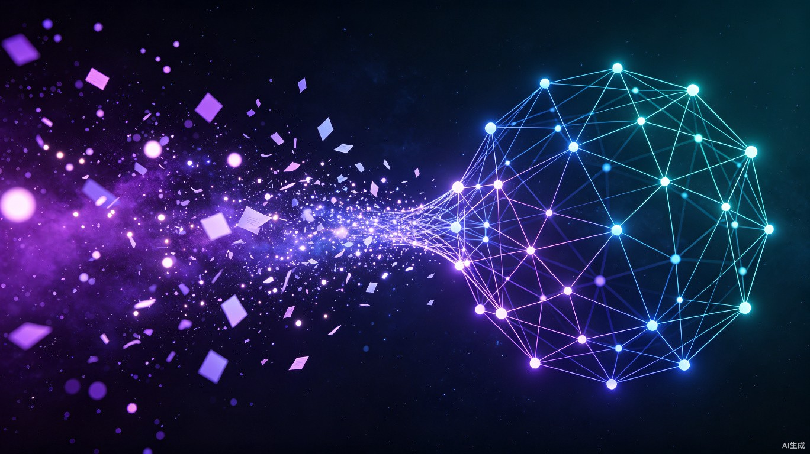

思维织机
让碎片化的知识，自动编织成一张会思考的网。
AI 驱动的知识连接引擎，把"记下来"变成"连起来"。
把散落的知识，织成一张网

思维织机 ThoughtLoom
"织机"取自传统纺织工具——经纬交织，方成布匹。思维织机做的是同样的事：把你每天碎片化的笔记、灵感、阅读摘录当作"纱线"，用 AI 自动发现它们之间的关联，编织成一张可视化的个人知识网络。
知识记了却用不起来
我们每天都在产生大量碎片化的想法——读书笔记、会议要点、灵感速记、网页收藏——但这些信息散落在不同工具和角落，彼此孤立。当你需要调用某个知识时，往往想不起来记在了哪里，更看不到不同知识点之间隐藏的关联。知识停留在"记下来"，无法转化为"连起来"的洞察。
在学习和工作中，我经常遇到这样的困境：明明读过某本书、记过某个想法，但当需要用时却找不到，也想不到它与其他知识的联系。现有笔记工具只是"存储仓库"，而不是"连接引擎"——它们帮你把东西放进去，却不会帮你发现东西之间的关系。
一款桌面端 + Web 的 AI 知识管理应用。用户输入笔记和想法后，AI 自动分析语义、提取关键词、发现跨笔记的隐藏关联，并生成一张可交互的知识网络图谱。支持拖拽编辑、智能推荐关联、一键生成知识摘要。
谁需要一台思维织机
知识工作者
产品经理、研究员、内容创作者——每天处理大量信息，需要把碎片知识体系化。
终身学习者
学生和自学者——跨学科学习，需要发现不同领域知识之间的联系。
咨询顾问
需要快速整理调研信息、发现数据背后的洞察、高效输出方案。
- 读书笔记归档：记录读书笔记后，系统自动关联到已有知识，提示你可能相关的旧笔记和灵感。
- 头脑风暴速记：快速输入想法，AI 实时帮你发现它与已有知识的连接，激发新的思考方向。
- 写作方案准备：一键查看相关知识网络，从散落的笔记中快速组装素材，看到全局脉络。
- 知识复盘回顾：定期生成知识地图摘要，看看最近学的东西之间有什么新连接。
在 5+ 个工具间切换查找信息（备忘录、Notion、微信收藏、浏览器书签……），手动整理笔记关联，耗费大量时间且容易遗漏关键连接。
所有知识汇聚一处，AI 自动发现关联，一键查看知识网络，从"翻找"变为"秒达"。
一张会生长的知识网
碎片笔记（紫）与 AI 发现的关联（青）自动织成知识网络
为什么这件事值得做
效率提升
将知识检索从"翻找"变为"秒达"。AI 自动建立关联，用户无需手动整理标签和目录。预计平均节省 60% 的知识调用时间，让知识工作者把精力花在思考上，而不是找资料上。
社会价值
降低知识管理的门槛，让每个人都能轻松构建自己的"第二大脑"。当碎片知识不再是负担，而变成持续生长的智慧网络，个人认知能力的提升将带来更广泛的社会效益。
思维织机不只是一款笔记工具——它是你的知识连接引擎， 把散落的想法编织成网，让每一次记录都有意义，让每一个灵感都能被找到。